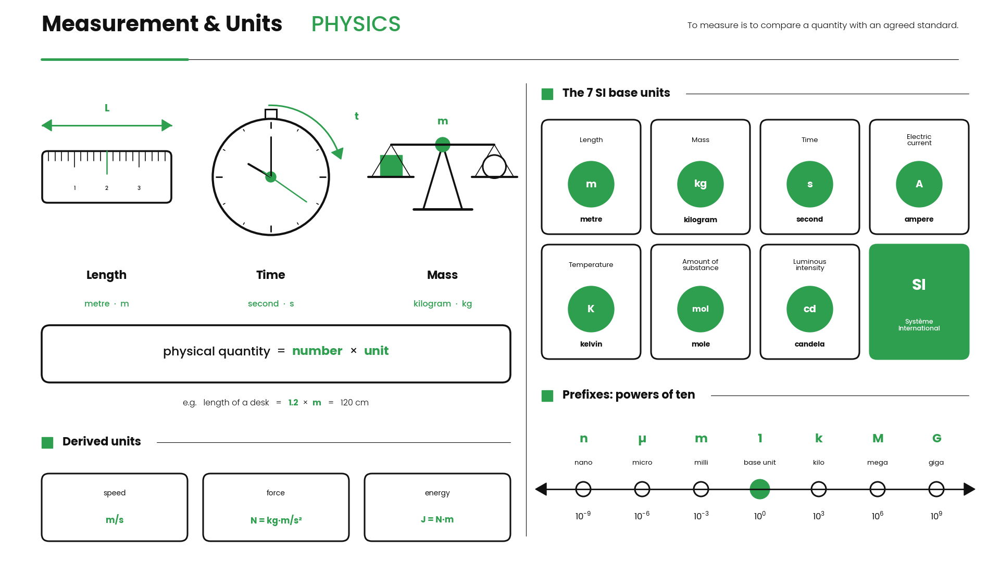

Measurement & Units

Physics is the science of how the world works. But before we can describe anything — how fast a car moves, how heavy a rock is — we need a way to measure it. To measure something means to compare it with something everyone agrees on.
Imagine you want to tell a friend how long your desk is. If you say "about 4 arms long," your friend won't know exactly what you mean — arms are different sizes! That's why scientists use units: agreed standards that mean the same thing everywhere on Earth.
Key idea
A unit is an agreed standard used to measure things, so everyone understands the same thing. Without units, numbers are meaningless.
The most common system of units is called SI (from French "Système International"). Here are the ones you must know:
mass → kilogram (kg)
time → second (s)
Example: "5" alone tells us nothing. But "5 meters" tells us a length, and "5 kilograms" tells us a mass. Always write the unit after the number!
We also use prefixes to make big and small numbers easier. "Kilo" means 1000, so 1 kilometer = 1000 meters. "Milli" means one-thousandth, so 1000 millimeters = 1 meter.
Remember
kilometer (km) = 1000 m · meter (m) = 1000 mm
Free plan: your next session unlocks tomorrow. ⚡ Pro unlocks it today.